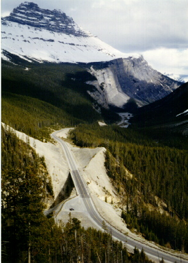

Previous
Day
Previous
Day Next Day
Next Day
Got off to an early start. I found the Bow Pass fairly easy. Kept meeting the same British couple over and over. Lots of game. Saw coyotes and a bear, etc. [Cycling past a bear beside the road made me pretty nervous. Ever been chased by a dog on your bike? Imagine a bear.]
Rode down to Saskatchewan River Crossing. That's where I ate lunch. Carried on from there. Had some winds against me, but I made it. Stopped at Rampart Creek, where there were 22 cyclists coming south.
I climbed the big hill. What a monster. That's the toughest pass, I'd say.

Got to the hostel. Lots of friendly people here--including lots of cyclists. Heading north, but not as fast as I am.
Previous
Day
Next Day
 Dave's Page
Dave's Page
 Home
Home